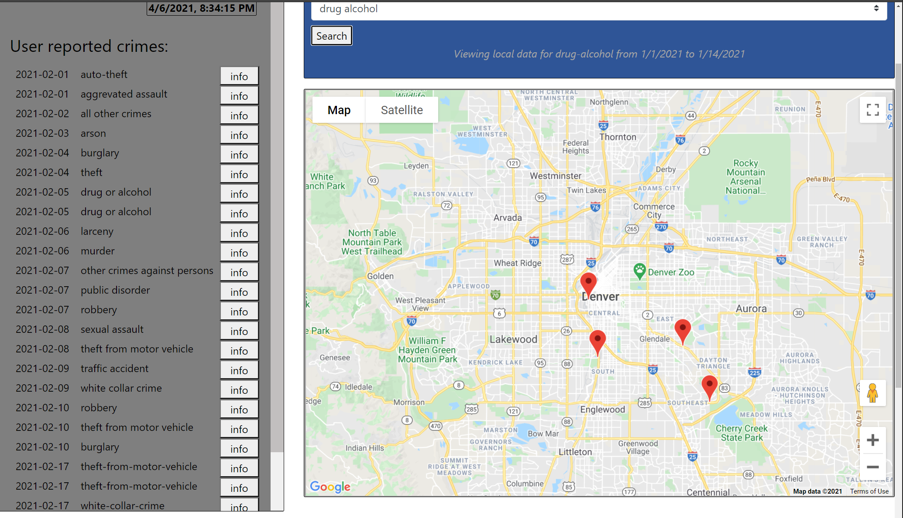

I was a part of a five-man developer team who worked on this project for about a week. This app lets users view crime data for each state from the FBI API on a google map, as well as local, location-based crime data for the Denver area (MySQL database). Additionally, users may enter their own data if they were a victim/witness of a crime. For security reasons, all user data is kept anonymous. Since our goal is to help users be safe, our app provides randomized safety tips on each reload, as well as local emergency numbers. Currently our local and user data side focuses on users in the Denver area.